RTESArenaAssist es una aplicación que, mientras juegas a The Elder Scrolls: Arena, muestra como ayuda la traducción, el mapa, el diario, el registro, la gestión de partidas guardadas, las capturas, el diccionario y el manual.
Las imágenes son de Assist con tu idioma de visualización, el tema «Oscuro», los ajustes iniciales y sin conexión. Con la conexión activa, lo que se muestra cambia según la pantalla actual de Arena y el estado dentro del juego.
El uso básico consiste en iniciar Arena, conectar Assist y entrar en el modo de diseño con el botón ⊞ para jugar. En el modo de diseño, la pantalla del juego en DOSBox y la traducción, el mapa y las pestañas de Assist se colocan en una misma pantalla, de modo que puedes consultarlos sin cambiar de ventana con Alt+Tab.
Para los detalles de cada ajuste, consulta la página «Guía detallada del cuadro de ajustes» de este manual.
La versión pública no incluye los datos de texto original de Arena. En el primer inicio, Assist genera los archivos de traducción a partir de la carpeta de Arena del usuario.
Primero se elige el idioma de visualización de Assist. El idioma elegido se aplica enseguida en esta misma pantalla.
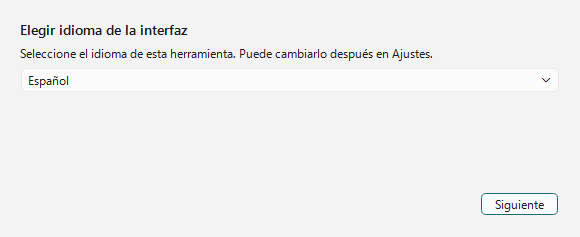
| Operación | Descripción |
|---|---|
| Lista de idiomas | Elige el idioma de la interfaz de Assist. En esta pantalla solo se pueden elegir japonés, English y Español. Los demás idiomas se eligen después del inicio, en el cuadro de ajustes, en la pestaña «General», con «Idioma». |
| Siguiente | Pasa a indicar la carpeta de Arena. |
Si sigues con Arena en ejecución, Assist detecta automáticamente la carpeta de instalación a partir del Arena que está abierto. Si no se detecta automáticamente, indica la carpeta de datos de Arena con Examinar....
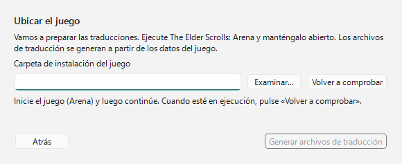
| Elemento | Descripción |
|---|---|
| Carpeta de instalación del juego | Indica la carpeta ARENA de Arena. |
| Examinar... | Elige la carpeta de Arena en el cuadro de selección de carpeta. |
| Volver a comprobar | Vuelve a detectar el Arena en ejecución. |
| Generar archivos de traducción | Cuando se encuentra una carpeta de Arena válida, pasa a la generación de los archivos de traducción. |
Se generan los archivos de traducción de Assist a partir de los datos de la carpeta de Arena. Al terminar, se pasa a la pantalla principal.
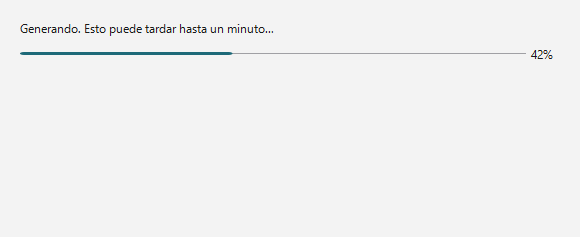
Durante la generación se muestran una barra de progreso y la fase en curso. Como los datos también se leen del Arena en ejecución, no cierres Arena hasta que termine.
Assist tiene la barra de conexión en la parte superior, el área de pestañas en el centro y la barra de estado en la parte inferior.
Justo después de iniciar, no hay conexión. Con Arena / DOSBox en ejecución, pulsa el botón Conectar de la parte superior derecha.
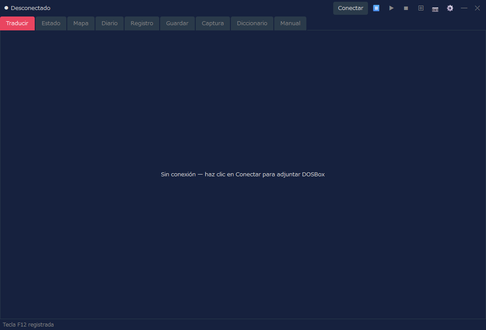
| Zona | Descripción |
|---|---|
| Estado de la conexión | Muestra «Desconectado» o, con conexión, el nombre de la pantalla, el nombre del IMG, etc. |
| Conectar / Desconectar | Conecta con Arena en DOSBox o termina la conexión. |
⏸ / ▶ / ■ | Pausa / reanuda / detiene la lectura en voz alta. La lectura en voz alta se puede usar si la activas en la pestaña «Lectura en voz alta» del cuadro de ajustes (por defecto está desactivada). |
⊞ | Activa o desactiva el modo de diseño. Con clic derecho se abre el menú de colocación. |
📷 | Guarda una captura de pantalla. En el modo de diseño, guarda todo el diseño en una sola imagen. También puedes guardarla del mismo modo con la tecla de captura (por defecto F12) mientras el foco está en la pantalla del juego (DOSBox). |
⚙ | Abre el cuadro de ajustes. |
El mensaje «Tecla F12 registrada» que aparece en la barra de estado justo después de iniciar indica que la tecla de captura ya se puede usar. La tecla se puede cambiar en la pestaña «General» del cuadro de ajustes.
Al conectar, el extremo izquierdo de la barra de conexión muestra el nombre de la pantalla reconocida. El ejemplo de abajo es la conexión con la pantalla de título de Arena.
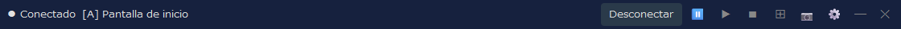
A la derecha del nombre de la pantalla se muestra también el nombre del IMG que usa esa pantalla (no aparece en pantallas que no usan IMG, como la pantalla de título). En la pestaña «Pantalla» del cuadro de ajustes puedes elegir si mostrar el nombre de la pantalla, el nombre del IMG o ambos.
Assist está pensado para usarse básicamente en el modo de diseño. Las pestañas también funcionan en una ventana normal, pero con el modo de diseño puedes tener fijos en la misma pantalla el juego, la traducción, el mapa, el registro, etc.
En el diseño predeterminado, a la izquierda está la pantalla del juego en DOSBox, a la derecha las pestañas principales de Assist y en la parte inferior los paneles auxiliares. Durante el juego puedes consultar el mapa o el diario a la derecha y ver la traducción de la pantalla actual en la parte inferior o en la pestaña Traducir.
| Operación | Descripción |
|---|---|
Clic izquierdo en ⊞ | Inicia o termina el modo de diseño. |
Clic derecho en ⊞ | Permite elegir la forma de diseño, la esquina de colocación, el modo de seguimiento, volver a colocar, mantener en primer plano, etc. |
📷 | En el modo de diseño, guarda todo el diseño, con DOSBox y Assist, como una sola imagen. |
Desconectar | Termina la conexión con Arena. Si sales del modo de diseño antes de desconectar, es más fácil ordenar las ventanas. |
Las capturas de cada pestaña sirven para ver cómo está organizada la pantalla. Con la conexión activa, el contenido se actualiza según la pantalla actual de Arena y el estado dentro del juego.
Es la pestaña principal, que muestra la traducción correspondiente a la pantalla actual. Lo que se muestra cambia según la situación: pantalla de título, creación de personaje, conversaciones, instalaciones, objetos, hechizos, etc.
| Contenido | Descripción |
|---|---|
| Traducción | Muestra la traducción de la pantalla o del evento actual en el idioma de visualización. |
| Original | Según los ajustes, muestra también el texto original en inglés correspondiente. |
| Vistas específicas | La lista de clases, la lista de razas, el equipo, la lista de instalaciones, la lista de compras, etc. pasan a una vista específica más fácil de leer. |
En la pestaña «Información de combate» de los ajustes puedes mostrar también en la pestaña Traducir la información durante el combate. Elige «Combate y vista normal» o «Vista completa de combate» y define si se muestra como texto o como barras de enemigos. Por defecto no se muestra, y se mantiene la presentación anterior de la pestaña Traducir.
Es la pestaña para ver los atributos y el estado del personaje. Tras crear el personaje, o con la conexión activa durante el juego, se muestra la información de estado.
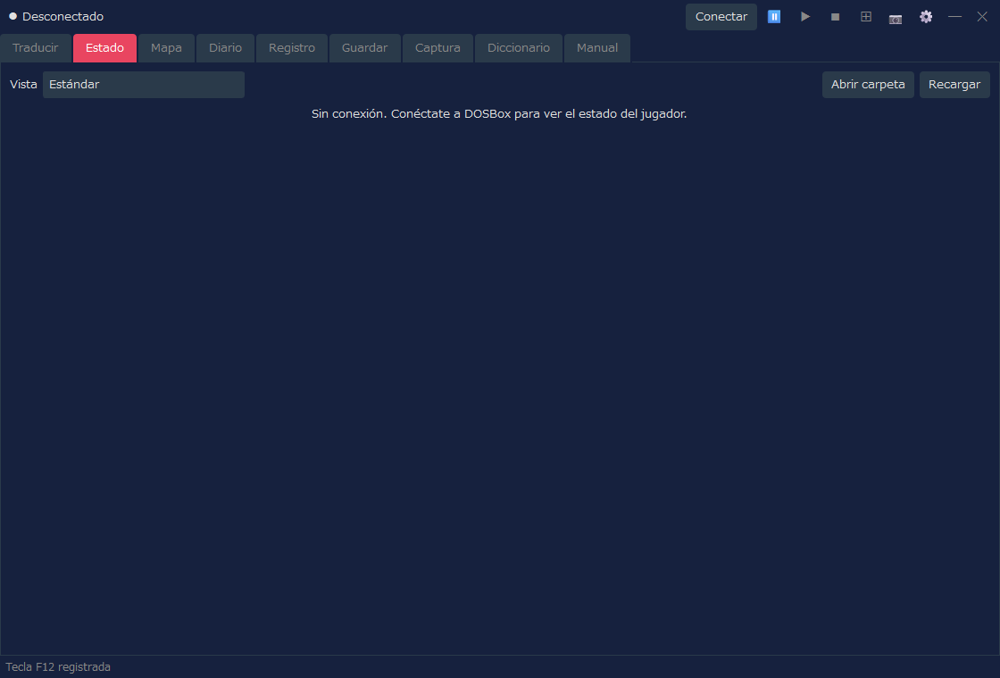
| Contenido | Descripción |
|---|---|
| Vista | Elige «Estándar» (la presentación usada hasta ahora) o uno de los diseños (hojas de personaje). La pantalla de estado y la distribución de atributos de la pestaña Traducir también usan la vista elegida aquí. |
| Atributos | Permite ver los atributos principales, como Fuerza e Inteligencia. |
| Valores de estado | Permite ver la salud, la fatiga, los puntos de hechizo, etc. |
| Operaciones de cambio | Solo si activas explícitamente el modo de trampa se pueden usar operaciones como cambiar los atributos (vista «Estándar»). |
Es una función para mostrar el estado con el diseño que elijas. Si en «Vista» eliges algo distinto de «Estándar», el estado se muestra con el diseño elegido. Un diseño es un archivo HTML (una plantilla) y hay 8 diseños incluidos. También puedes crear el tuyo. Algunos diseños muestran la cara y la imagen de cuerpo entero (con el equipo), el estado del personaje (enfermedad, veneno, parálisis, etc.) y la defensa de armadura de cada parte del cuerpo (un valor calculado a partir del equipo; cuanto menor, mejor protección). La cara y la imagen de cuerpo entero se crean a partir de los archivos de tu Arena.
| Operación | Descripción |
|---|---|
| Abrir carpeta | Abre la carpeta donde se colocan tus propias hojas de personaje (archivos HTML), que es character_sheets, en el mismo lugar que RTESArenaAssist.exe. La primera vez que se abre, se colocan copias de los diseños incluidos. Los archivos colocados aparecen en la lista «Vista» con «(carpeta)». |
| Recargar | Vuelve a leer las hojas de personaje de la carpeta. Púlsalo después de modificar un archivo. |
Para la lista de diseños incluidos, el funcionamiento de las hojas de personaje y los valores que se pueden insertar y cómo escribirlos, consulta la página «Diseños de estado (hojas de personaje)» de este manual.
Muestra el mapa automático de calabozos, ciudades, campo, interiores, etc. Lo que se muestra se actualiza según la posición actual dentro del juego.
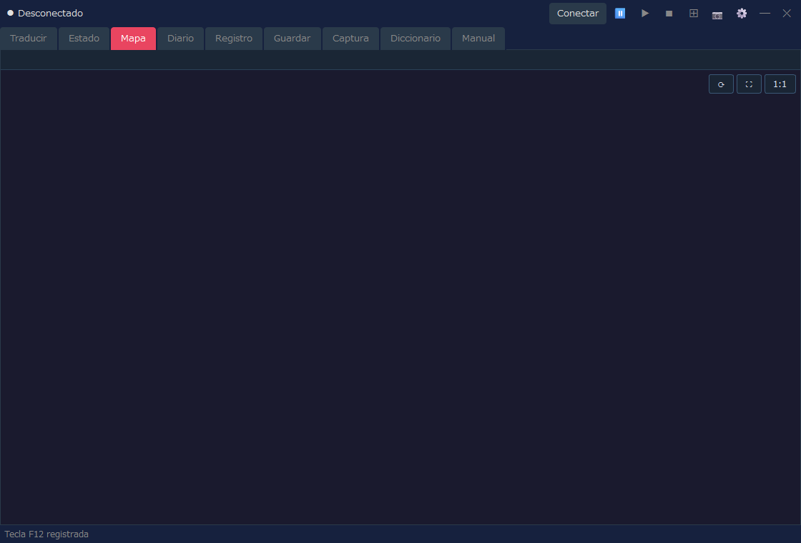
| Contenido | Descripción |
|---|---|
| Posición actual | Muestra el mapa y la posición actuales a partir del estado del juego conectado. |
| Mapa automático | Dibuja las zonas ya descubiertas, los muros, las entradas, el terreno del campo, etc. |
| Ajustes de visualización | La cuadrícula, las coordenadas de chunk, la visualización ampliada del campo, etc. se pueden ajustar en el cuadro de ajustes. |
Es la pestaña para ver, en tu idioma de visualización, lo que está anotado en el Logbook / Journal del juego.
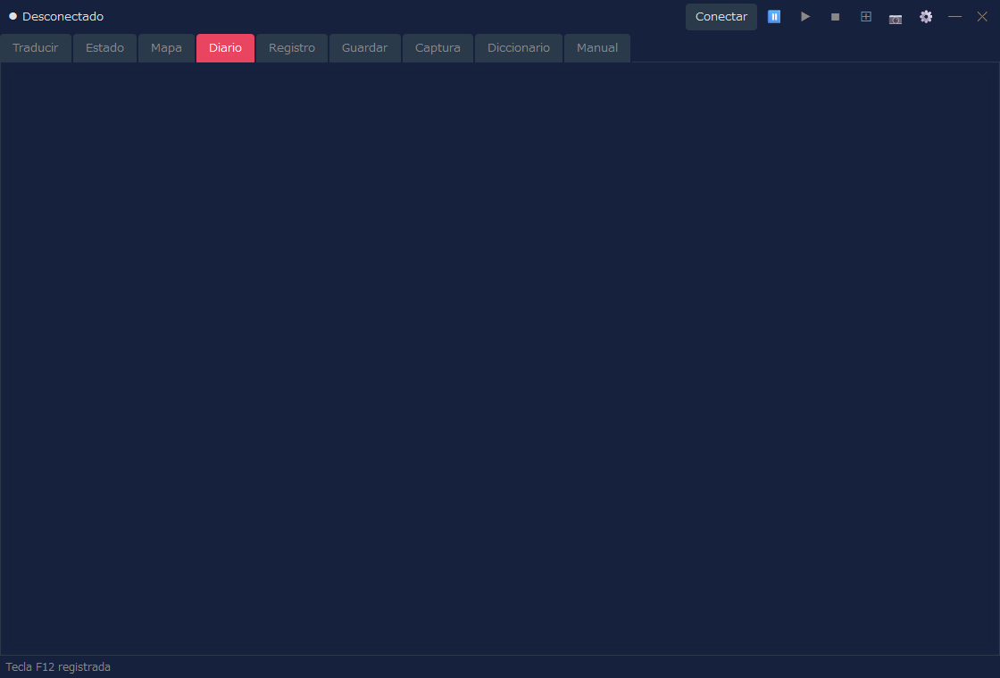
| Contenido | Descripción |
|---|---|
| Fecha y encabezado | Muestra la fecha y el resumen de cada entrada del diario. |
| Texto | Muestra el texto del Logbook en el idioma de visualización. |
| Actualización | Cuando el diario se actualiza en el juego, también se actualiza lo que muestra Assist. |
Es la pestaña para consultar como historial las traducciones que ha mostrado Assist. Resulta útil para volver a leer un texto que se te pasó.
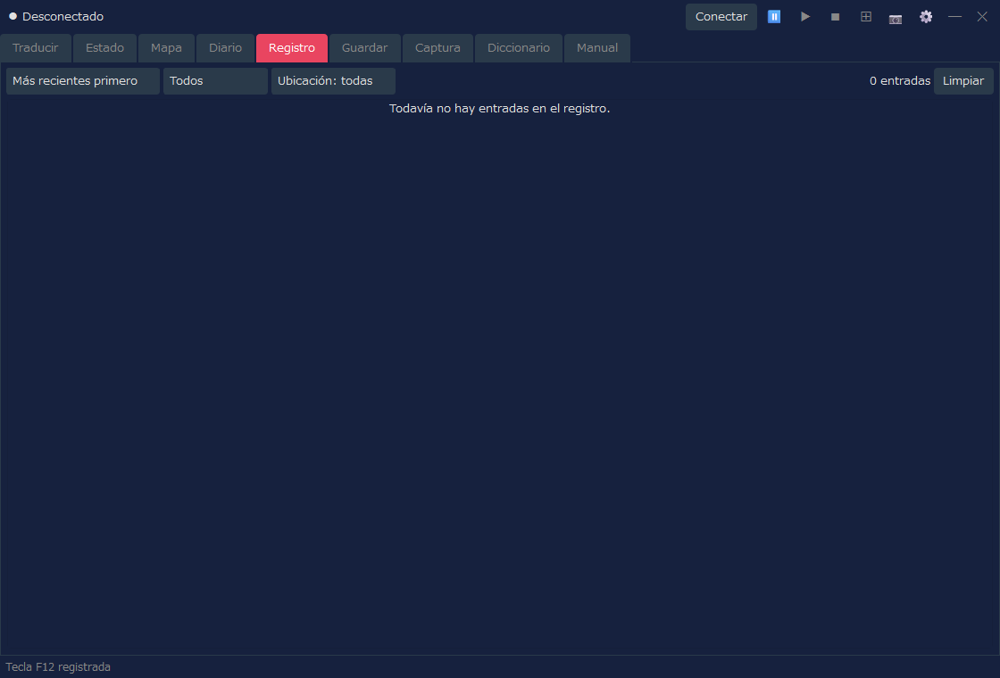
| Operación | Descripción |
|---|---|
| Orden | Alterna entre más recientes primero y más antiguos primero. |
| Filtro | Filtra el registro por tipo o por lugar. |
| Limpiar | Borra el registro que se muestra. |
Si activas guardar el registro de combate y se ha registrado algo, dentro de la pestaña Registro puedes alternar entre el «registro normal» y el «registro de combate». Si no hay registro de combate, solo se muestra el registro normal, como antes.
Es la pestaña para gestionar los espacios de partida guardada de Arena y sus copias de seguridad. Ayuda con las operaciones sobre los datos guardados, como la copia de seguridad automática antes de restaurar.
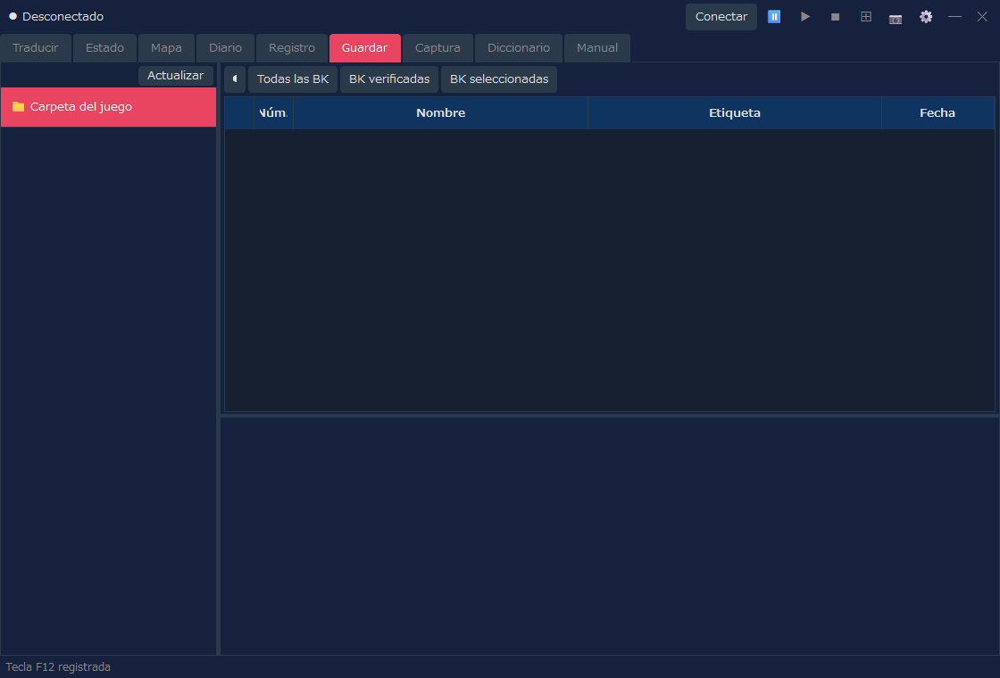
| Operación | Descripción |
|---|---|
| Lista de espacios | Muestra la lista de espacios de partida guardada de Arena. |
| Copia de seguridad | Hace una copia de seguridad de la partida guardada seleccionada. |
| Restaurar | Devuelve los datos guardados desde una copia de seguridad. |
| Eliminar | Elimina las copias de seguridad o partidas guardadas que ya no necesites. |
Es la pestaña para ver las capturas de pantalla guardadas con el botón 📷. Desde aquí también se pueden abrir las imágenes tomadas en el modo de diseño.
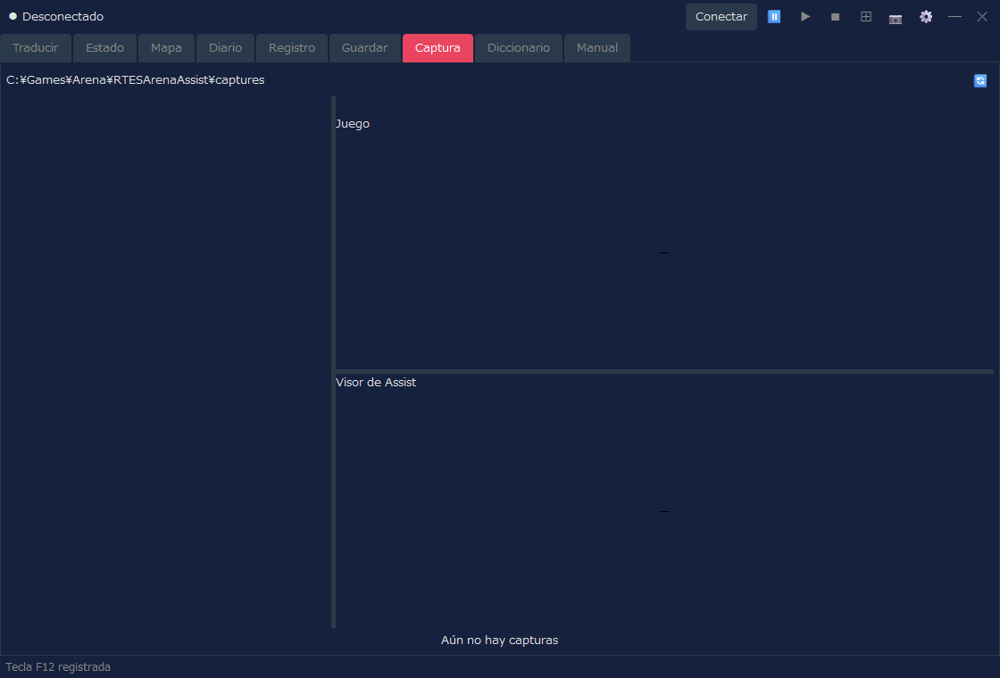
| Operación | Descripción |
|---|---|
| Lista | Muestra las capturas guardadas. |
| Vista previa | Permite ver la imagen seleccionada. |
| Bloqueo | Protege de la eliminación las imágenes que quieras conservar. |
| Eliminar | Elimina la imagen seleccionada o las imágenes que ya no necesites. |
Es la pestaña para buscar en el diccionario de traducción y en los textos de calabozos de Assist. Sirve para consultar palabras y frases que aparecen en el juego.
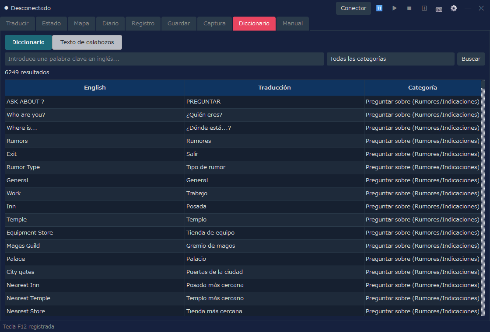
| Modo de visualización | Descripción |
|---|---|
| Diccionario | Busca por palabra clave en inglés, traducción y categoría. |
| Texto de calabozos | Busca y consulta los textos de calabozos procedentes de los INF. |
Es la pestaña para consultar, en tu idioma de visualización, la explicación de los controles básicos y del sistema de Arena y la explicación de las funciones de Assist. Úsala cuando quieras consultar un control o un término durante el juego.
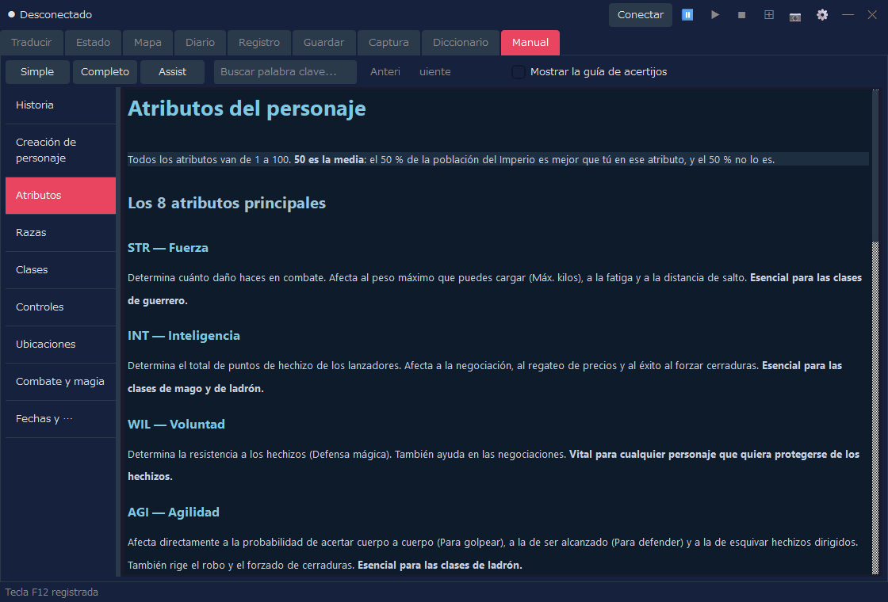
| Operación | Descripción |
|---|---|
| Simple / Completo / Assist | Cambia el contenido que se muestra (tabla de abajo). |
| Búsqueda por palabra clave | Busca dentro del manual. |
| Lista de la izquierda | Cambia entre capítulos como Historia, Creación de personaje, Controles y Combate. |
| Cambio | Contenido | Idiomas |
|---|---|---|
| Simple | Explicación del juego (9 capítulos) | 12 idiomas |
| Completo | Traducción del manual oficial (se muestra importando un paquete de traducción) | Actualmente solo japonés |
| Assist | Explicación de las funciones de Assist (uso básico, cuadro de ajustes, diseños de estado (hojas de personaje)) | 12 idiomas |
Versión completa (traducción del manual oficial)
En «Completo» puedes leer la traducción del manual oficial (la Player's Guide y su anexo). La traducción se distribuye, aparte de la aplicación, en la página de descarga del manual como un paquete de traducción para cada idioma de visualización (RTESArenaAssist-manual-<idioma>.zip) (actualmente solo en japonés). La primera vez que lo uses, impórtalo con los siguientes pasos.
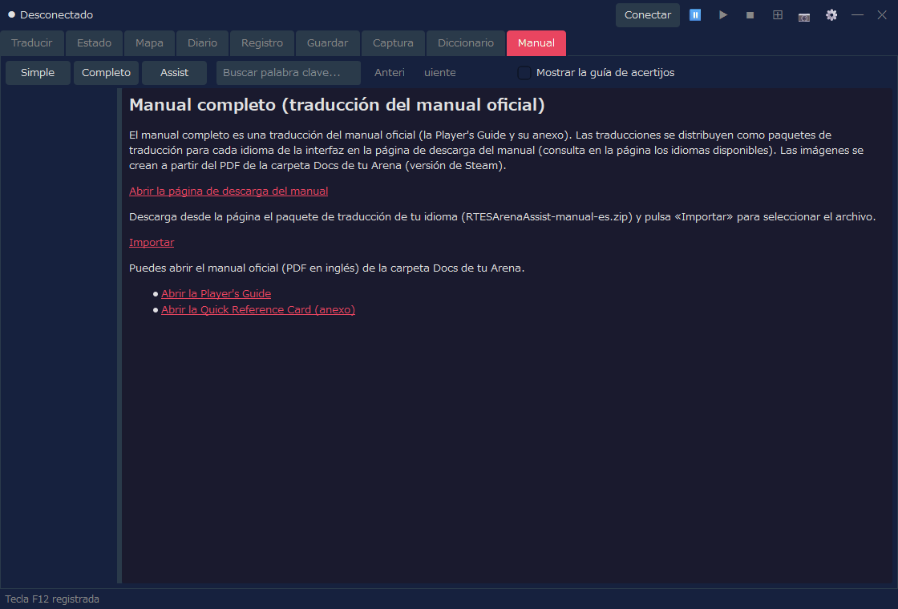
Las imágenes del manual se crean a partir de Player Guide.pdf, que está en la carpeta Docs de tu Arena (versión de Steam). Si no se encuentra el PDF o es de otra versión, solo se muestra el texto. Comprueba la «Carpeta del juego» en los ajustes y pulsa «Volver a crear las imágenes» para que también se muestren las imágenes. Después de importar, puedes borrar el archivo descargado. Assist no se conecta a internet (la descarga se hace con tu navegador).
En «Completo» también se muestran los enlaces para abrir el manual oficial (el PDF en inglés) de la carpeta Docs. Si el idioma de visualización es el inglés, se muestran solo estos enlaces en lugar del paquete de traducción.
Conectar, en la parte superior derecha de Assist, para conectar con Arena / DOSBox.⊞ para entrar en el modo de diseño.📷 o con la tecla de captura (por defecto F12).⊞ y, si hace falta, pulsa Desconectar.El tamaño del modo de diseño, la forma de diseño, el panel de traducción, la carpeta de captura, etc. se pueden ajustar en el cuadro de ajustes. Si quieres usar la lectura en voz alta de la traducción, también se activa en la pestaña «Lectura en voz alta» del cuadro de ajustes.